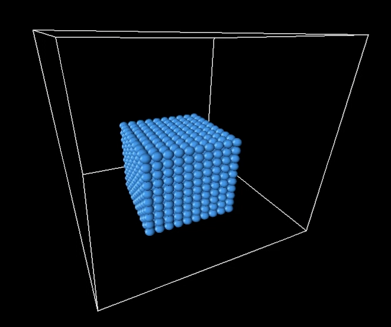

Abstract
In this project we built a fluid simulator by modeling fluid using particles. Our final simulations included a scene where a x by x by x cube of particles drops into an empty box in addition to a scene where a x by x by x cube of particles drops onto an obstacle, a 3D cube, that the particles must move around, almost creating a waterfall effect.
Our simulator begins with a predefined number of particles and parameters and with each iteration, it recalculates each particles’ position. These particles and their movement was calculated with physical accuracy, through the use of position and velocity formulas and gravity. In addition, our particles are modeled with incompressibility in mind, a defining attribute of fluids. Lastly, the system is fully reactive to its surroundings, be it the walls of the empty box or the occlusion in the center of the box through complex ray tracing and collision detection.
Technical Approach
We implemented the pseudocode from Macklin and Muller’s paper Position Based Fluids. Here’s the pseudocode.
We first started by applying a gravitational force to every particle. The force of gravity is 9.81m/s^2 in the negative y direction. Therefore, we did v_i +=delta_t * glm::dvec3(0, -9.81, 0). Now that we’ve calculated the new velocity, we can predict the new position of each particle with new_pos = pos + delta_t * v_i .
Then we need to find the neighbors of each particle. The neighbors of a particle are within kernel_size distance from the particle. It is important is note that the neighbors of a particle include itself.
In order to find the neighbors, we implemented the “Uniform Grid using Sorting” method found in the Particle Simulation using CUDAby Simon Green. We imagined the simulation area to be in a 3D grid, which each grid cell was kernel_size by kernel_size (there was no actual grid structure created). If a particle was at position (x, y, z), then it lied in grid cell (x / kernel_size , y / kernel_size , z / kernel_size) . The neighbors of a particle at grid cell a, b, c were are grid cells (d, e, f) where d is in {a - 1, a, a + 1}, e is in {b - 1, b, b + 1}, and f is in {c - 1, c, c + 1}. So there was a total of 27 neighboring grid cells.
Neighbors were stored as a vector inside each particle. The vector contained particle pointers (we made sure not to have copies of the neighbors in the vector) since particles change as we enter the while loop.
Now we could enter into the while loop that ran nIters steps. The purpose of the while loop is to adjust the proposed new position of each particle so that all particles obey the density constraint. We want to make sure our particles have the right amount of compressibility.
We first found the constraint force (lambda) needed for each particle. Lambda was calculated with
C_i(p_1 … p_n) is the density constraint of each particle. C_i comes from
, where p_o is the rest density and p_i is the density at particle i. Rest density is the density when the particles are at rest. Therefore, in the beginning timestep, p_i is close to p_o since all the particles are at rest (no force has been applied yet). Therefore C_i(p_1 … p_n) is close to 0.
, where the mass of each particle is 1 and we apply a smoothing kernel, that takes in the kernel_size and the vector between a particle and a neighbor. Smoothing kernel is to estimate the density.
The smoothing kernel function that we used comes from Macklin and Muller’s slides on Position Based Fluids. W is
Now that we have lambda, we are ready to calculate delta_p. Delta_p is the amount to changed the proposed new position.
For delta_p, we go through all neighbors of the particle. The formula we used is seen at here:
gradient_W takes in the kernel_size and the vector between a particle and its neighbor. Gradient_w calculates the gradient. Gradient_W comes from Macklin and Muller’s slides on Position Based Fluids.
Delta_p is then the summation of the (sum of the constraint force of both particles multiplied by the gradient_w) over the neighbors. Delta_p is then divided by the rest_density.
We now need to make sure that the new position doesn’t collide with the box.. If the new position is outside of the bounding box, we then set the particle to be slightly inside of the box. For example, if the the x of the new position is more than bottom_pt[0] + box_width (which is the max x coordinate of the bounding box), then we set the x to be bottom_pt[0] + box_width - 0.004f.
We did a extra part in that we added an obstacle to the particles. We created a small box in the bounding box. The particles would have to go around the small obstacle box, instead of ignoring it. In order to implement this, we modified the calculating collisions code.
In addition to the original code, we checked with the new position was inside the obstacle box. (To be inside the obstacle box, both x and y and z of the new position must be inside the obstacle box.) If it was, then that meant we collided with the obstacle and must move the new position to be outside of the obstacle box.
To see if we needed to the y of the obstacle box, we checked if the particle’s velocity.y was not 0. If it was 0, then that meant we couldn’t move the new position in the y direction since there was no velocity that way. Therefore, we would have to move either/both the x and z parts of the new position. (A new position is not in the obstacle box is at 1 of it’s coordinates (x, y or z) is not in the box). What we do with y, we apply the same process to x and z coordinate.
If we were to move the x coordinate of the new position, we had to calculate when the particle had intersected the obstacle box in the x direction. We used the plane intersection formula of (p - o) / d in order to find the time when the particle had hit the obstacle box. Therefore, what is o? O is the previous new position of the particle. Therefore, we had to create a new field called “prev_newp” in order to save the previous new position of each particle.
We applied the plane intersection formula to both x faces of the cube. Whichever time intersection of the 2 planes was the smaller was the plane that the particle actually went through. We knew knew that both time intersections had to have the same sign because if it wasn’t, then that meant the previous new position was previously inside the obstacle box. If t_left is the correct intersection time, then we set the new position of the particle to be par.prev_newp.x + t_left * par.v.x - 0.004f.
We applied the same process to the y and z coordinates of the particle.
Once collisions are calculated, we then increment the new position of the particle by delta_p.
We keep on calculating delta_p for nIters iteration. Once nIters is done, we have found our final new_position of the particle. Therefore, we set the position of the particle to be the new position.
We also calculate the velocity. Velocity of a particle is the direction from the old position to the new position. We then divide this direction by delta_t. The formula we used can be seen at the bottom here.
Bugs and Complications
Throughout the project we found several bugs that led to strange errors. For example we didn't reset neighbors and miscalculated outputs of the spiky kernel function and delta_p. Several of these bugs resulted incompressibility issues and led to outputs like the following
To tackle these issues we read each others code and checked over the math. In addition when we were having incompressibility issues we printed out the 444 center particle's density estimation at the beggining because it should be close to rest density. We often relied on printing out specific values and comparing them to numbers we anticipated to get.
Lessons Learned
We clearly learned a lot about modeling fluids and the physics behind modeling something using particles. We also learned how computationally expensive calculating these positions was as we spent all night waking up every two hours to check on the progress to only see that little has changed. Through this we learned the importance of thinking ahead about this and planning for optimizations. We also learned more about opengl and utilizing it. Lastly, we started early, but worked primarily independently and split parts up and we were making little progress. We learned the importance of actually meeting up and working through tough concepts by bouncing ideas off of each other.
Further Work
Next steps for this project would be to finish implementing viscosity and vorticity in addition to implementing parallelization. Our 20x20x20 demo belong took 8 hours and 30 minutes to complete locally and really could have benefited from speed improvements. In addition it would be interesting to make the water more realistic or try more complex occlusions.
Results
Empty Box
10x10x10 Particle Cube
|  |

|

|
20x20x20 Particle Cube

|

|
Cube Obstacle
10x10x10 Particle Cube

|
15x15x15 Particle Cube

|

|
References
Green, S., Particle Simulation using CUDA. Nvidia. July 2012.
Macklin, M., Müller, M. Position Based Fluids. Nvidia. ACM TOG 32(4).
Macklin, M., Müller, M. Position Based Fluids(slides). Nvidia. Siggraph 2013.
Sun, W., Position Based Fluids(slides). 2016.
Contributions
We all worked on the code together. We wrote the skeleton of the iteration loop together. We then worked on different parts of the code.
Jessica worked on devising the neighbor grid system and implemented the actual finding and storing of particles' neighbors. In addition she also aided in the implementation of the calculation of lambda the constraint force and attempted implementing vorticity and viscosity forces; however unfortunately, those were not able to get finished in time. Jessica also worked on adding the obstacle cube and implemented a collision check and response for that obstacle cube.
Olivia worked primarily on understanding and implementing the lambda calculation, including implementing calcPoly, one of the two kernel functions used throughout the calculations. In addition, Olivia also worked with Jessica to design the neighbor finding system. Lastly Olivia also worked with Jessica in adding in the obstacle by drawing the wire box as well as helping devise and implement the collision check and response for the obstacle cube.
Robert worked primarily on implementing the delta_p calculation and utilizing the lambda Jessica and Olivia calculated. In addition he also created the wire box for the particles, including drawing the actual box and implementing the basic conllision check and response with that bounding box. Lastly, Robert also implemented calcSpiky, one of the two kernel functions used throughout the calculations.
We all worked to find bugs in the code. We read and reread each others' code and compared findings to pinpoint the causes of the bugs and how to resolve those errors.